Zadar
Zadar is the coast's quieter surprise, a Roman-founded city on a peninsula where ancient ruins sit a few steps from modern art installations, and the Adriatic puts on one of its best sunset shows. The Sea Organ is the headline act — architectural pipes built into the waterfront steps that turn waves into music — paired just steps away with the Greeting to the Sun, a circle of solar glass panels that lights up after dark. But Zadar rewards wandering beyond the two famous landmarks: a sphinx statue tucked into Park Sfinge, the city's barkajoli still rowing passengers across the harbor channel in an 800-year-old tradition, and sweeping views over the terracotta rooftops from the Cathedral bell tower. Evenings here are made for the waterfront — golden hour on the promenade, a sailboat gliding past as the sky turns pink and purple, and the old town's lighthouse blinking on as the light fades. It's a city that feels lived-in rather than curated, and all the better for it.
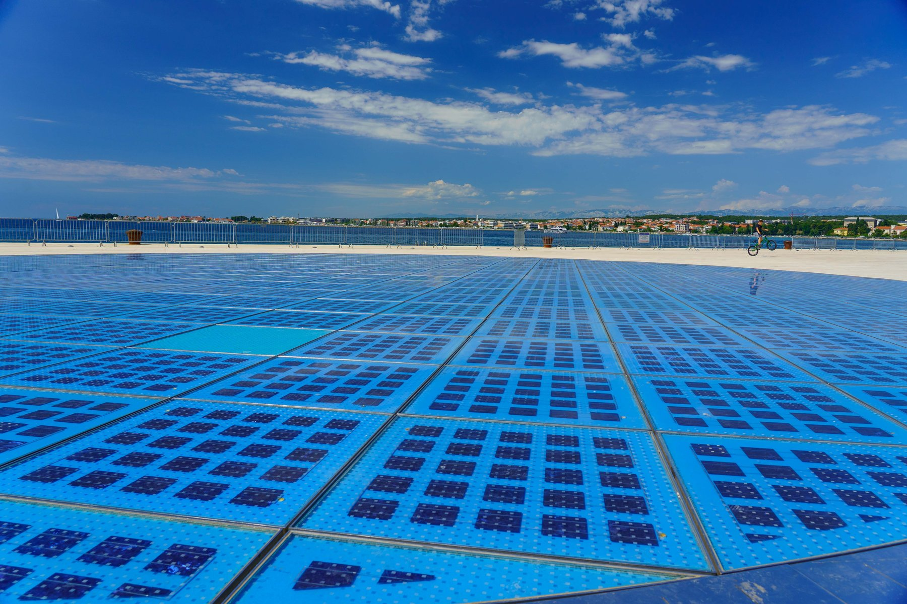
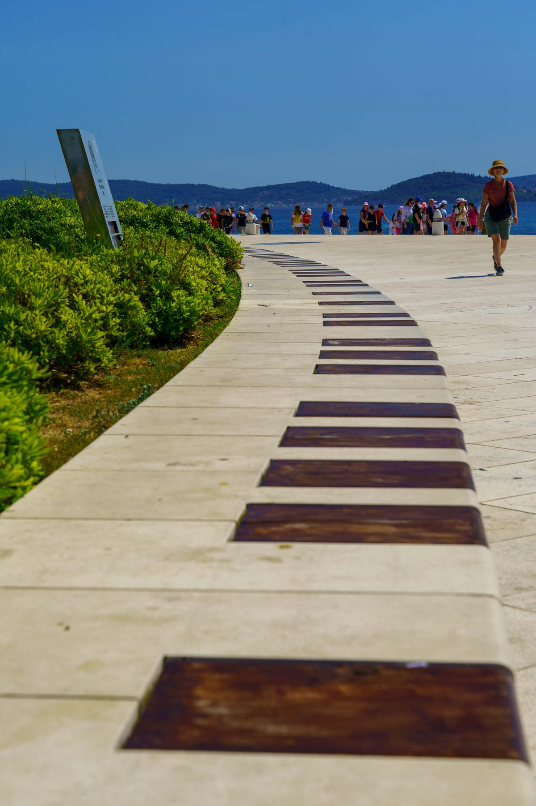
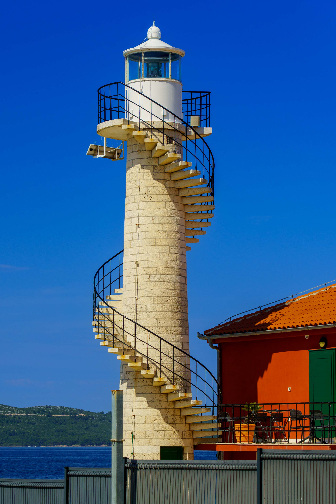
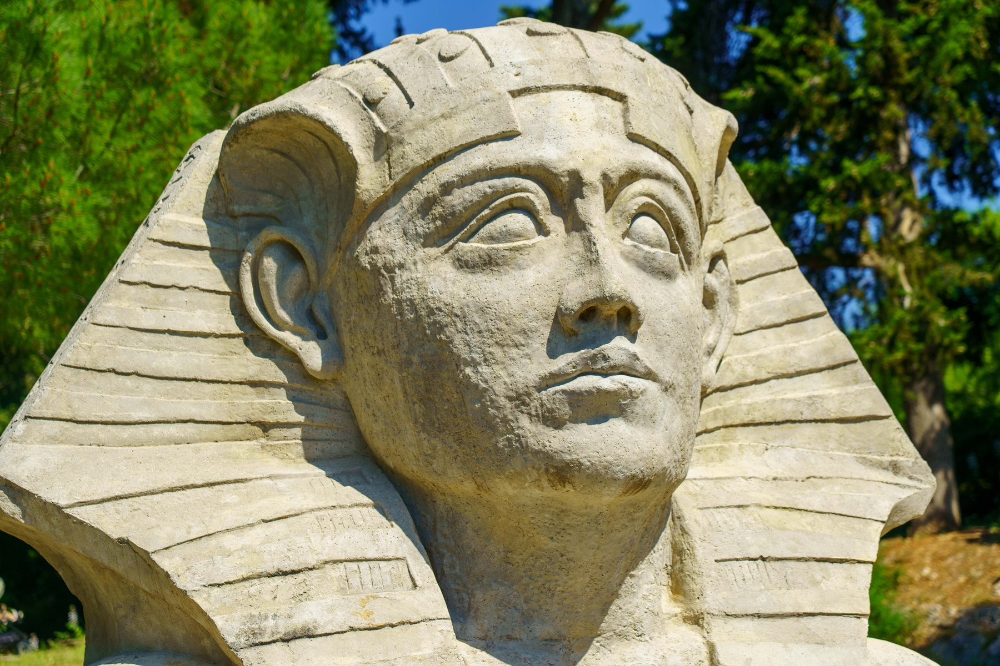
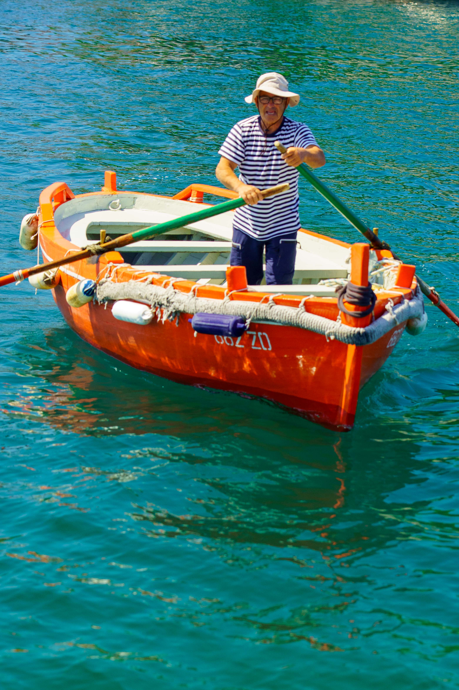
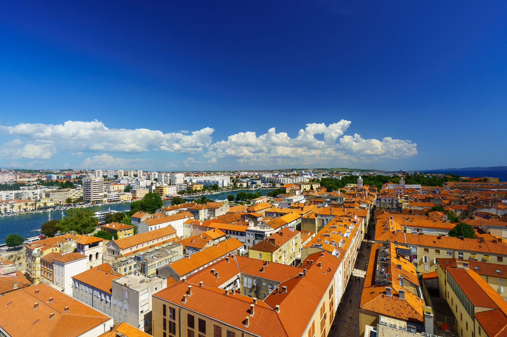
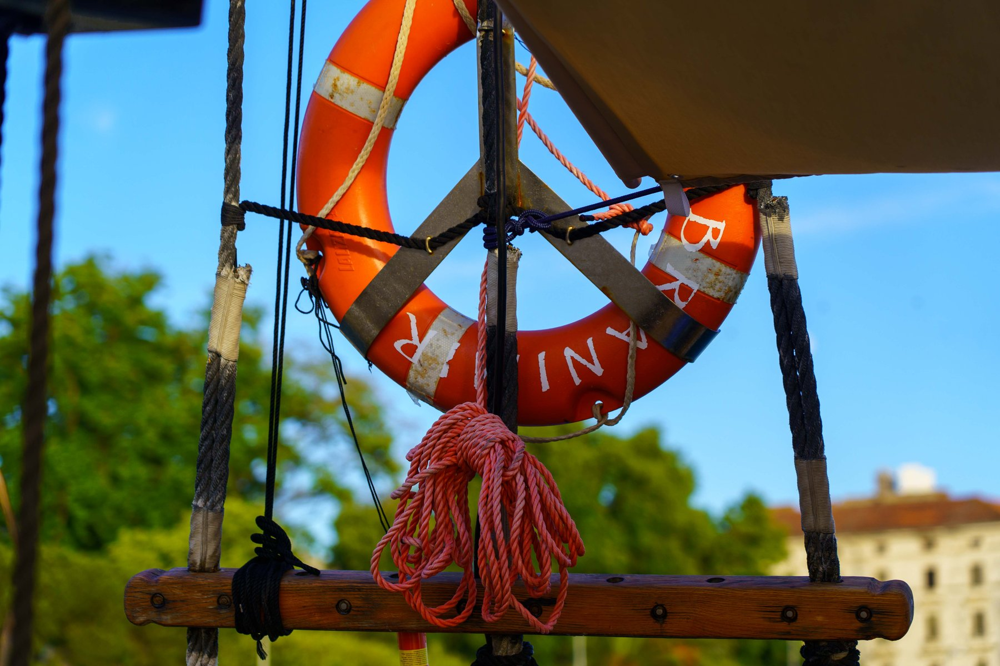
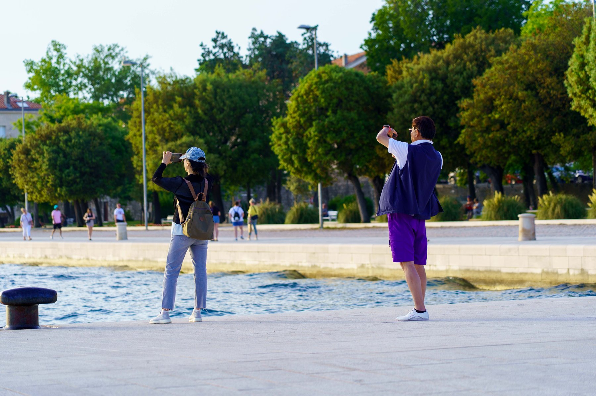
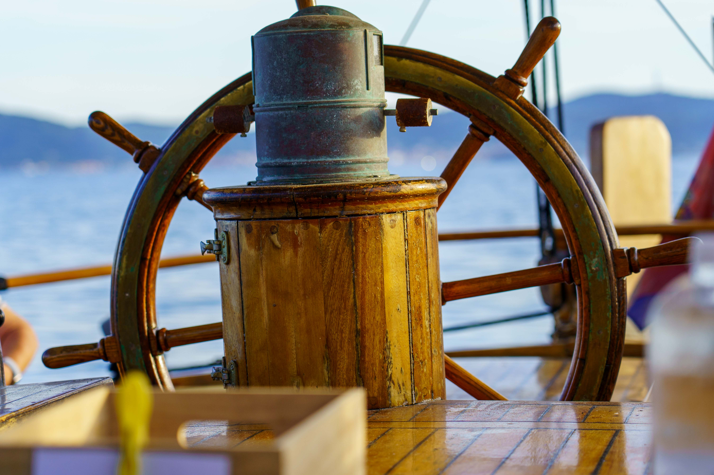
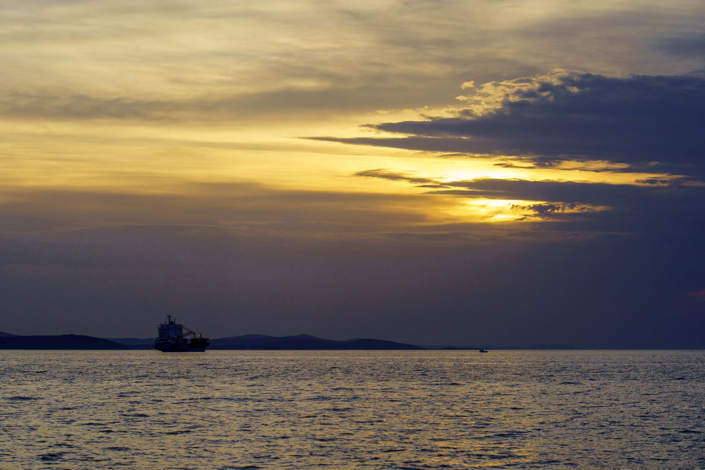
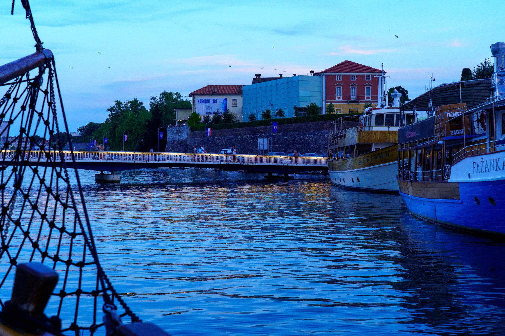
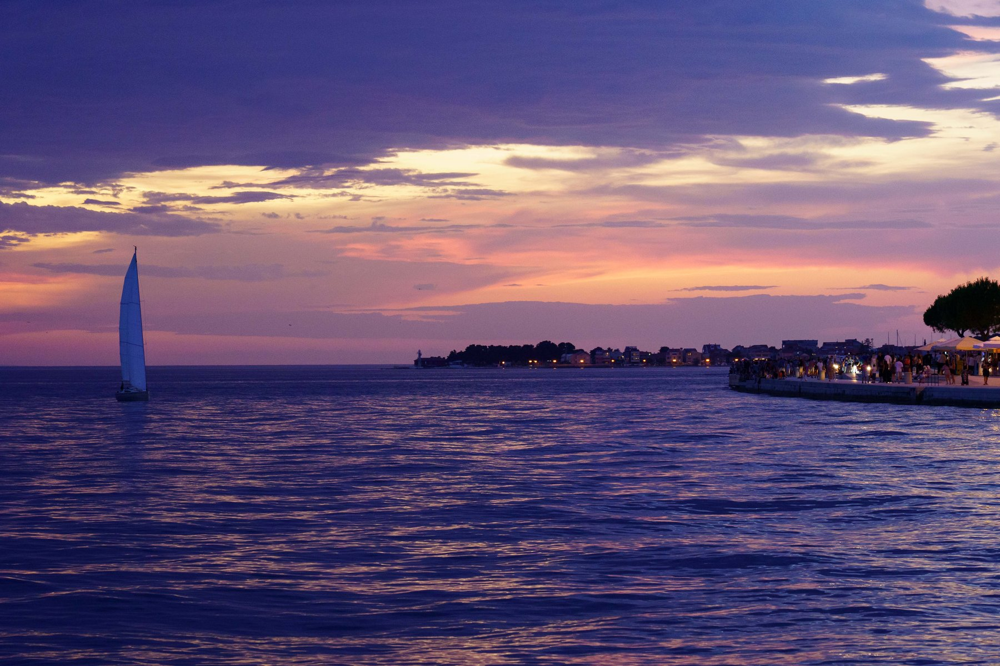